软件可靠性
软件可靠性的研究和实践具有如下重要意义：
- 推进软件的可靠性预计预测、分析设计、测试验证及其软件可靠性工程管理能力的改进提高，确保并不断改进软件可靠性，提高企业诚信，增强顾客满意，超越顾客期望；
- 指导软件可靠性分析、评估、验证与鉴定，为软件验收（验证）提供依据，增强用户信心；
- 推进软、硬件可靠性工程的均衡发展，提高系统可靠性水平；
- 推进软件工程的不断丰富和发展，促进软件工程管理水平及其软件过程能力的改进提高；
- 转变观念，有效扭转只重视硬件，忽视软件可靠性的现状。
产品的可靠性特征量主要有：
可靠度；
可靠度是时间t的函数，故也称为可靠度函数，记作R(t)
1 | R(t)=P(T>t) t为规定时间，T为产品寿命 |
失效概率密度；
失效概率密度是产品在包含t的单位时间内发生失效的概率，是累积失效概率对时间t的导数，记作f(t)。
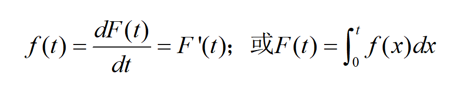
累积失效概率；
累积失效概率也称为不可靠度，记作F(t)。
1 | F(t)=P(T<=t) F(t)=1-R(t) |
失效率；
失效率(瞬时失效率)是：“工作到t时刻尚未失效的产品，在该时刻t后的单位时间内发生失效的概率”，也称为失效率函数，记为λ(t)。由失效率的定义可知，在t时刻完好的产品，在(t，t+△t)时间内失效的概率为：
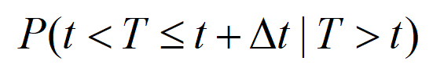
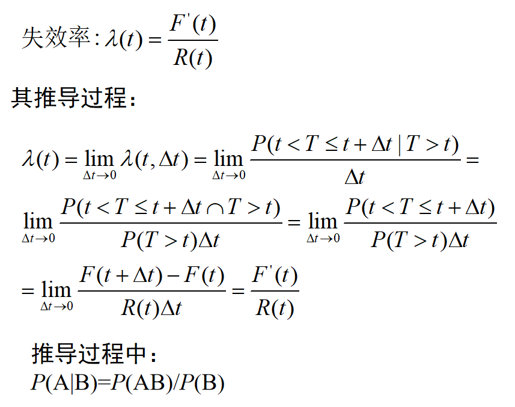
失效率曲线是浴盆曲线
平均寿命；
不可修产品的平均寿命是指产品失效前的平均工作时间，记为MTTF(Mean Time To Failure)；
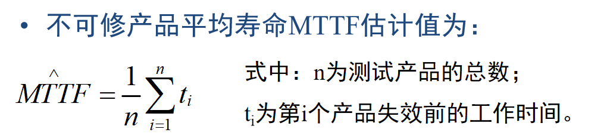
可修产品的平均寿命是指相邻两次故障间的平均工作时间，称为平均无故障工作时间或平均故障间隔时间，记作MTBF(Mean Time Between Failures)。
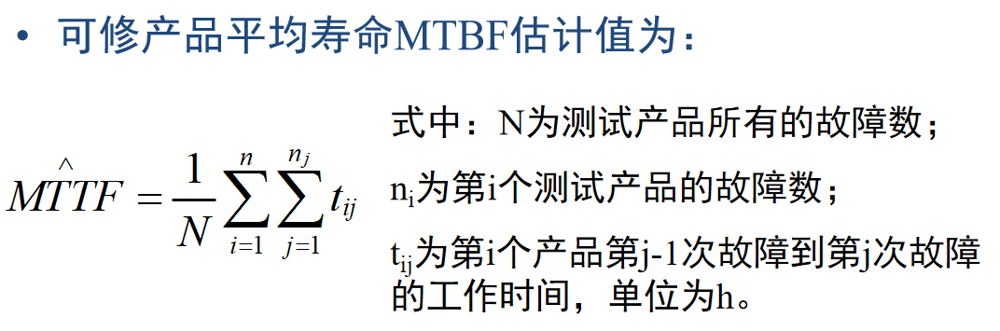
平均寿命的意义是可靠度函数R(t)与t轴所形成的面积
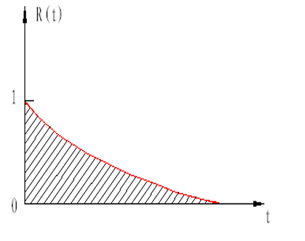
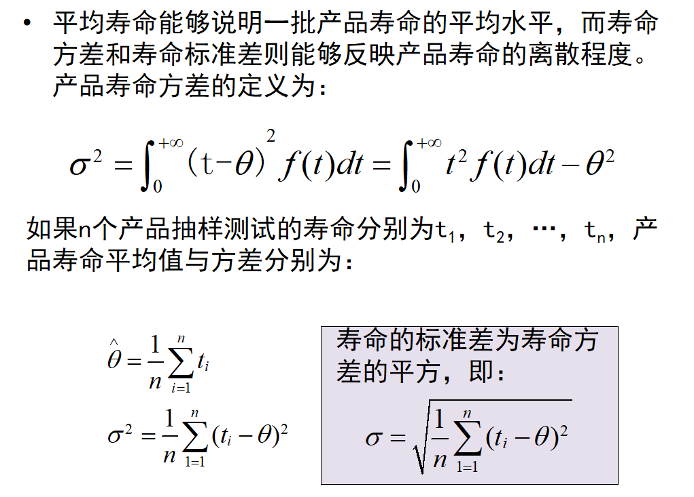
可靠寿命；
可靠寿命是指可靠度等于给定值r时产品的寿命，表达式为：
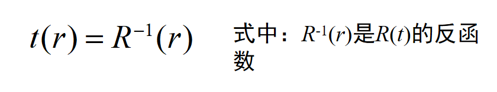
中位寿命；
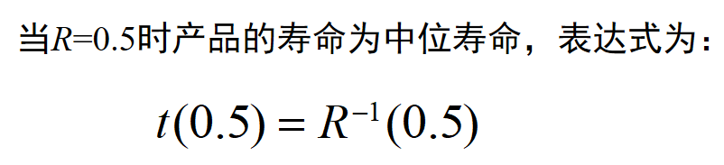
特征寿命等。
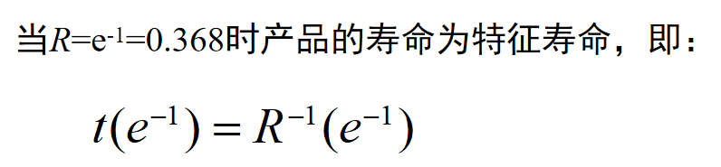
可靠性特征的数学表达式及其关系
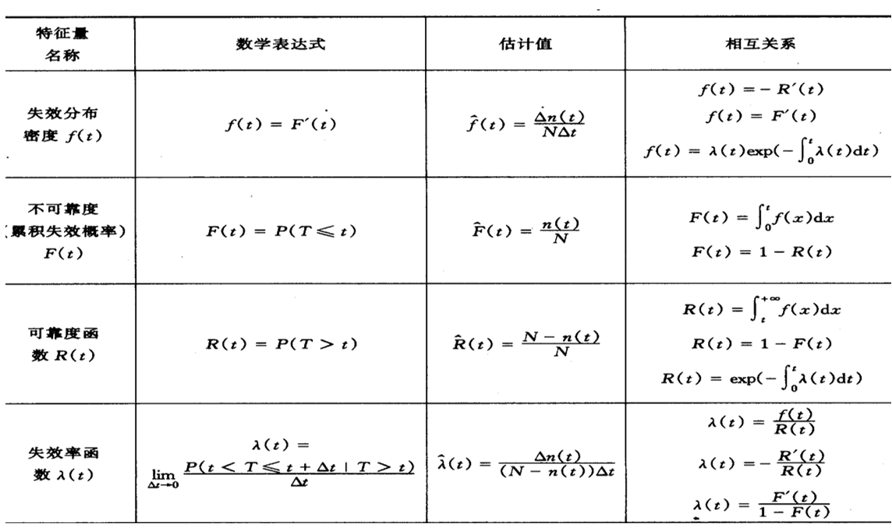
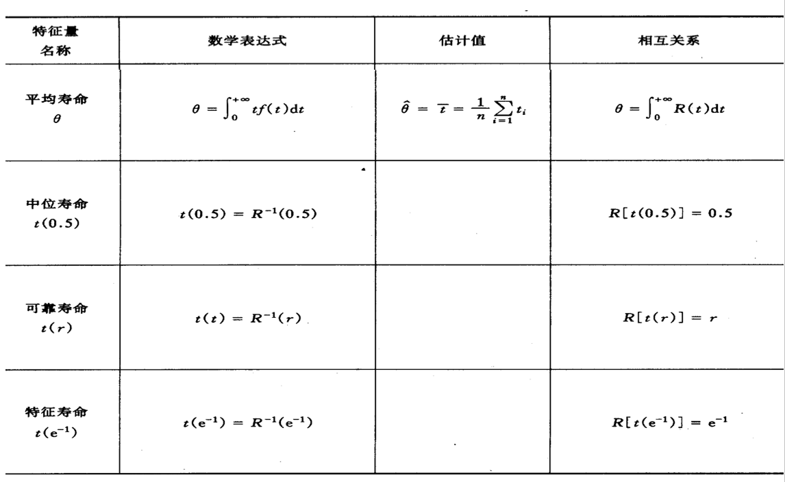
维修性特征量
维修性定义
维修性是指在规定的条件下使用的可维修产品，在规定的时间内，按规定的程序和方法进行维修时，保持或恢复到能完成规定功能的能力。
维修性特征量有三个：
- 维修度M(t)；
- 修复率μ(t)；
- 平均修复时间MTTR。
维修度(Maintainability)定义
把产品维修时间Y所服从的分布称为维修分布，记为G(t)。维修度是指在规定的条件下使用的产品发生故障后，在规定的时间(0，t)内完成修复的概率，记为M(t)，维修度是时间(维修时间t)的函数。
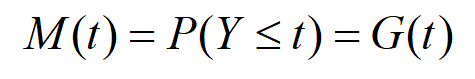
修复率定义
修复率指修理时间已达到某一时刻但尚未修复的产品在该时刻后的单位时间内完成修理的概率，可表示为μ(t)。—对应于产品的失效率λ(t)。
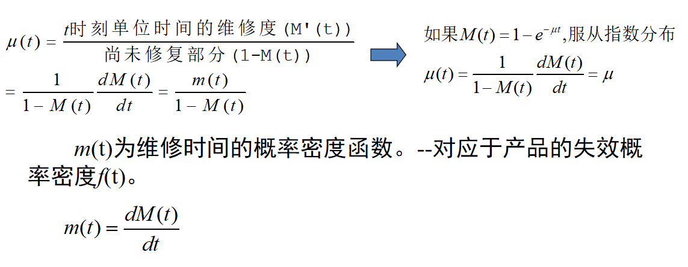
平均修复时间(MTTR)定义
平均修复时间是指可修复的产品的平均修理时间，其估计值为修复时间总和与修复次数之比，记作MTTR(Mean Time To Repair)。—对应于可修产品的平均工作时间(平均寿命)MTBF。
可靠度与维修度之间的关系
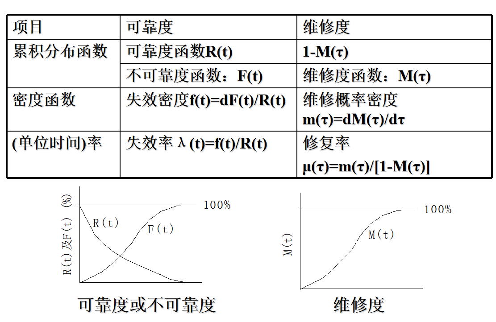